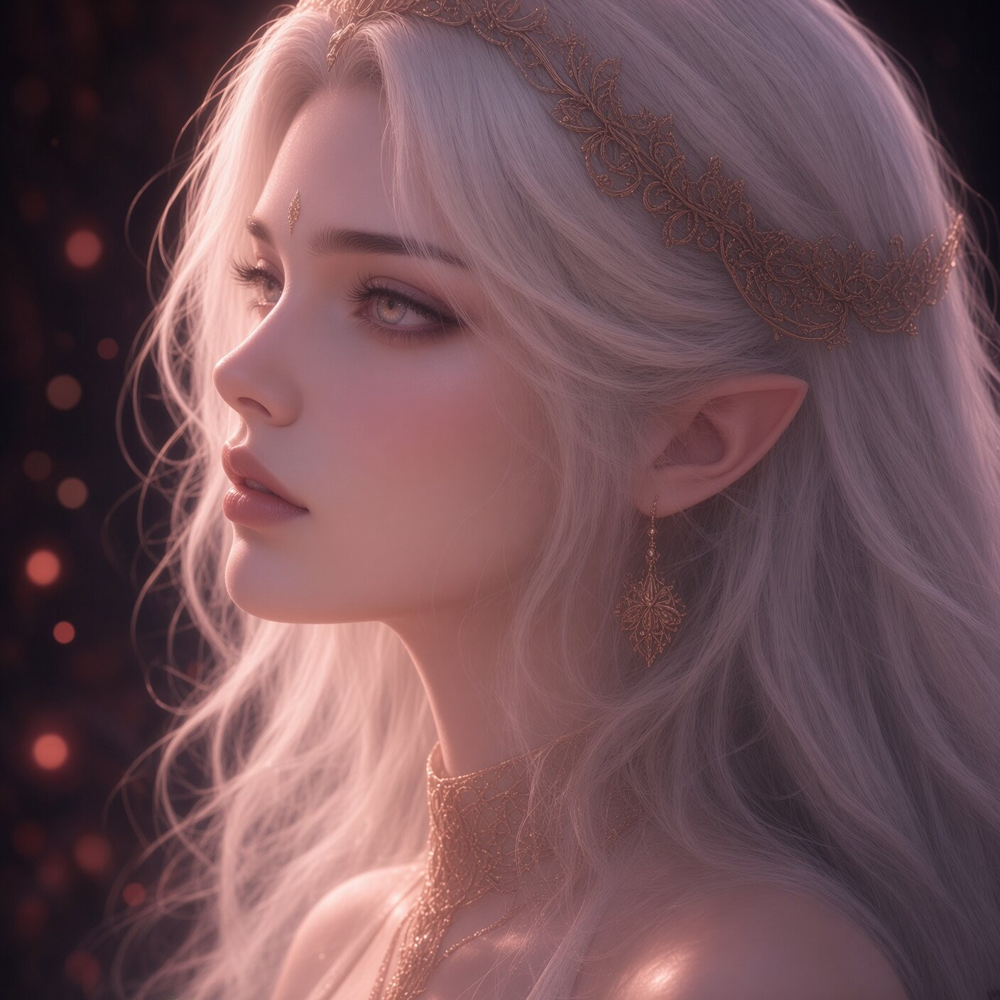

Vespera
The one who slipped the borders
Created equal, she refused the place assigned to her and spoke the Name that should not be spoken. She fled Eden with wings of her own making and was found among the red places beyond the water. She returns not as a conqueror, but as a hunger that already knows the Garden’s oldest path.
Seraphine
Keeper of the old paths
An angel given the duty of watching. She flies the borders the way a river keeps its stones — faithfully, without asking why. She was never taught what to do if the thing she was meant to refuse arrived looking like want. Her first failure is not violence. It is remaining.

Seraphine, fallen
When the light lets go
After the Fall she is still herself — and no longer only that. Mortal enough to bleed. Angel enough to remember. The Garden has no category for a keeper who chose hunger and kept her name.
Asmodeus
The serpent who stayed
Older than either of them, he has hunted Vespera across centuries with the patience of a claim. When he finds her under the willow, the hunger in him does not destroy what it wants. It learns, for the first time, how to keep. His bargain is blood, and his price is never only one mouth.
Seraphine, remade
Neither only light nor only hunger
After the Fall and the bond, she is something the Garden has no name for. White horns. Pearl-iridescent wings. A light that no longer answers the old call. She is claimed by both and belongs completely to neither — the living shape of the second fracture.
← Contents
·
History of the Garden →